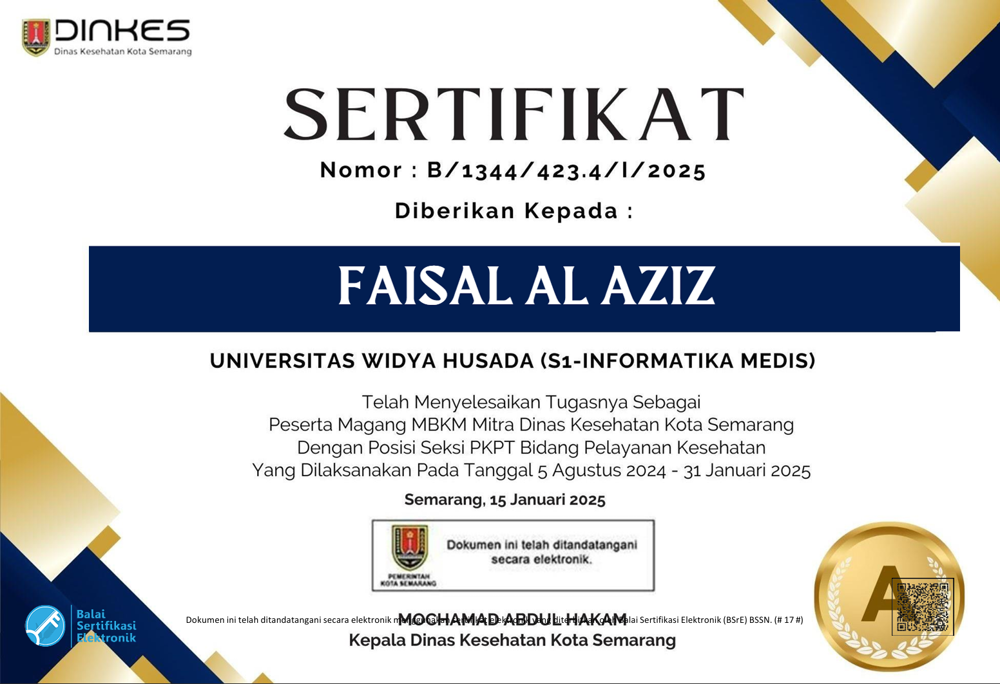

Detail Sertifikat
Informasi lengkap mengenai sertifikat yang dimiliki


Sertifikat Magang MBKM Dinas Kesehatan Kota Semarang
Magang MBKM Mitra Dinas Kesehatan Kota Semarang
Posisi: Seksi PKPT Bidang Pelayanan Kesehatan
Instansi: Pemerintah Kota Semarang
No. Sertifikat Resmi: B/1344/423.4/1/2025
Berperan aktif sebagai Peserta Magang Merdeka Belajar Kampus Merdeka (MBKM) di bawah naungan Dinas Kesehatan Kota Semarang dengan fokus pada implementasi Informatika Medis di ranah pelayanan kesehatan masyarakat. Selama 6 bulan masa kerja, saya bertanggung jawab penuh dalam mendukung optimalisasi tata kelola administrasi data kesehatan, proses monitoring, serta digitalisasi pelaporan klinis operasional di wilayah kerja Seksi PKPT. Atas komitmen, ketekunan, dan performa kerja yang ditunjukkan di lapangan, saya berhasil menyelesaikan program ini dengan Predikat Nilai A (Rata-Rata: 91,5 / 100) dari Kepala Dinas Kesehatan Kota Semarang, yang mencakup keunggulan pada aspek Kehadiran (95), Kedisiplinan (94,2), serta efektivitas Pelaksanaan dan Hasil Kerja nyata di lapangan.